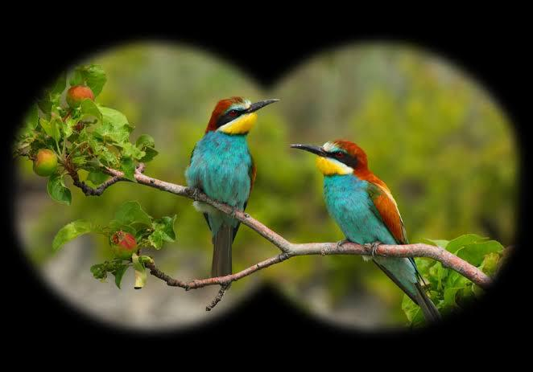

Exciting Things to Do
- Hiking Lwamondo Hill for stunning views and nature trails.
- Exploring Thathe Vondo Forest with guided cultural tours.
- Swimming at Guvhukuvhu Pool and Tshatshingo Potholes.
- Visiting the Museum of the Drum to learn about Venda music and traditions.
- Experiencing traditional Venda dance and festivals.
-  Bird watching and nature photography in Mphaphuli Cycad Reserve.
- Camping near Lake Fundudzi for an unforgettable night under the stars.